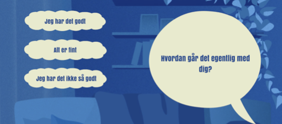
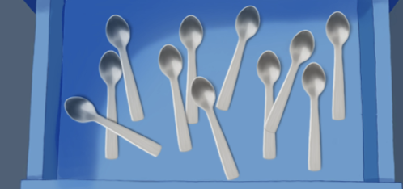
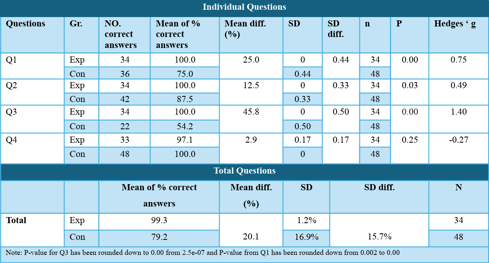

Narrative
A story-driven experience designed to make the learning content feel personal and relatable.
A narrative-driven serious game exploring how interactive experiences can support knowledge and awareness around suicide prevention among students in higher education.
LIV was created to explore whether a story-based serious game could make important knowledge about suicide prevention more accessible and engaging for students.
The game follows Liv, a young person navigating a difficult day. Through a combination of narrative, interaction and audiovisual design, players experience the story while being introduced to key facts and misconceptions surrounding suicidal thoughts.
Instead of presenting the information through a quiz or lecture, the project uses gameplay to make learning more engaging.


A story-driven experience designed to make the learning content feel personal and relatable.
Mini-games and choices turn the player from a passive reader into an active participant.
Voice-over, inner monologue, music and colour help communicate the story and its emotional tone.
The game was designed to challenge common misconceptions and support short-term knowledge.
The study explored whether LIV could help students learn about suicidal thoughts through an interactive narrative rather than traditional educational material.

Students who played LIV achieved a substantially higher average score than the control group, with the overall difference being statistically significant. The strongest improvements were found in understanding that talking openly about suicidal thoughts does not increase suicide risk, that suicidal thoughts do not necessarily lead to an attempt, and that people may communicate when they are struggling.
Participants rated the game at 4.44 out of 5 for overall engagement, exceeding the project target of 3.20.
The story and characters, visual design, colour symbolism, voice-over and inner monologue were among the elements participants responded most positively to.
The study measured short-term knowledge and used a convenience-based sample of higher-education students. The results are therefore promising, but cannot be generalised to all students or show whether the learning lasts over time.